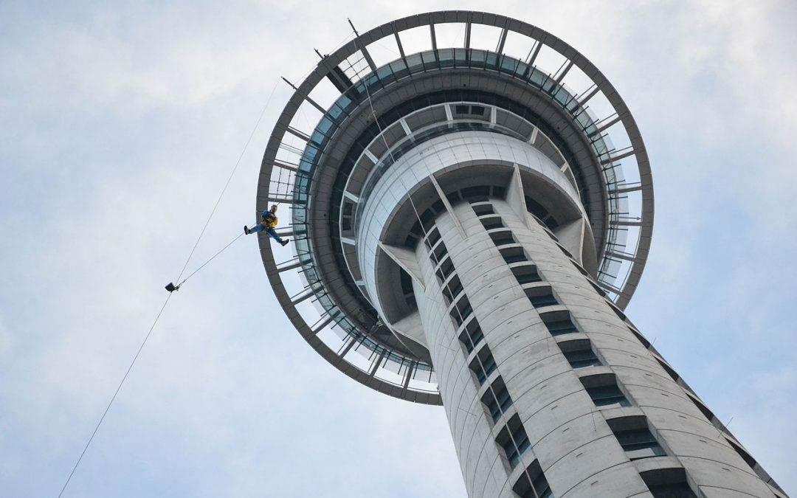
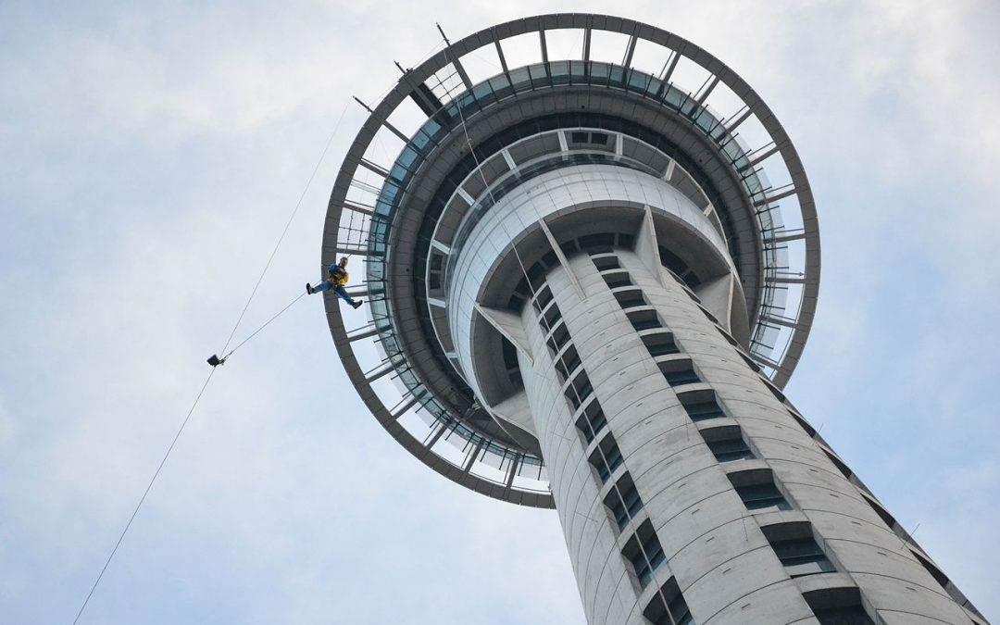

>
Home
Regions
West Coast
Marlborough
Central Otago
Wellington
Auckland
Map
History
Contact
Auckland
Tāmaki Makaurau
Check out The Long Weekends top five attractions in the Auckland regon!
Kelly Tarltons Aquarium
Sea Life Kelly Tarlton’s Aquarium is New Zealand’s most famous aquarium! It is home to New Zealand's only sub-Antarctic penguins and offers a myriad of opportunities to get up close and personal with incredible marine life from the Pacific and Southern oceans
Kayak to Rangitoto Island
Our Day Sea Kayak Tour Rangitoto Island explores the landmark of the Auckland region and allows you to see Auckland city from another perspective. Paddle across glassy waters of the Waitemata Harbour and keep a lookout for friendly marine wildlife on the way.
Golf at gulf Harbour
Gulf Harbour Country Club is a destination course for golfers from New Zealand and around the world.Our visitors are our guests and will be treated to a golfing experience that lives up to the expectations of playing a Robert Trent Jones Jr design, matched by personal friendly customer service. Gulf Harbour Country Club is focused on delivering value to its members with first-rate product and services.As a golf course, Gulf Harbour Country Club rates in the top ten in the country by most critics and provides a golfing experience that is truly world-class.As a country club, Gulf Harbour Country Club has a wide range of facilities for use by its members.In addition, the food and beverage service is second to none, with monthly dining experiences as well as special member functions and events.

Bungee Jump from the Sky Tower
SkyJump can best be described as Base Jumping with a wire attached to you. Different to Bungy jumping, you'll fall very fast at 85kph for approximately 11 seconds, before coming to a smooth landing on the Sky City Plaza below. We have highly trained jumpmasters who suit you up, rope you up and talk you through everything you need to know before you take the leap. They'll be with you up until your toes are balancing on the edge. Let go, fly and experience the rush of your life!
Dine down Aucklands Viaduct Harbour
Viaduct Harbour has long been a favourite location of Aucklanders. Its idyllic waterfront views are invitation enough to wine and dine the day away. The only struggle you may face is deciding on a place to spend a long lunch that could potentially stretch into the dinner hours. Overlooking Auckland’s Viaduct Harbour our spacious bar and sun-soaked eatery is the perfect blend of sea views, beer, wine & cocktails, live entertainment and a mouthwatering locally inspired menu. Our food menu is made for sharing and focused around seasonal produce and the freshest kaimoana (seafood), alongside a delicious wood fired pizza menu.


![ Bungee Jump from the Sky Tower SkyJump can best be described as Base Jumping with a wire attached to you. Different to Bungy jumping, you'll fall very fast at 85kph for approximately 11 seconds, before coming to a smooth landing on the Sky City Plaza below. We have highly trained jumpmasters who suit you up, rope you up and talk you through everything you need to know before you take the leap. They'll be with you up until your toes are balancing on the edge. Let go, fly and experience the rush of your life!](assets/img/bungy-jump.jpeg){kind=link}